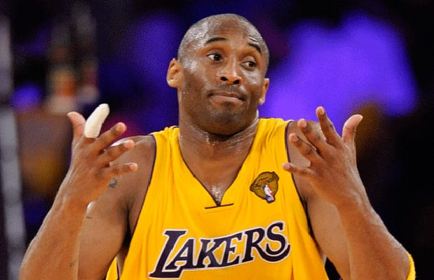

About Me
My name's Miguel Cruz and I'm a senior at Damien High School in La Verne, California. I love playing 2k, listening to rap music, and anything Lakers (Lakers slander is not allowed on this website). Kobe is my favorite athlete of all time and anyone else compared to him is not worth the effort, especially LeBron.
Frequently Asked Questions
"MJ or Lebron": Kobe"Favorite sports team?": Lakers
"Favorite Laker of all time?": Kwame Brown
"PS4 or Xbox?" PS4, Let's run it on MyPark
"Favorite color"?: Whatever looks good on a gucci belt.
"Favorite song of all time?": Love Sosa by Lord Chief Keef
"Nickname?": Migo (not affliliated with the rap group Migos, though I wish)
"If you could relive any sports moment in history what would that be?: Lakers championsip in 2010
|  |  |